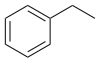

ethylbenzene

Definition: Ethylbenzene is an organic compound with the formula C6H5CH2CH3. It is a highly flammable, colorless liquid with an odor similar to that of gasoline. This monocyclic aromatic hydrocarbon is important in the petrochemical industry as an reaction intermediate in the production of styrene, the precursor to polystyrene, a common plastic material. In 2012, more than 99% of ethylbenzene produced was consumed in the production of styrene.
Source: Wikipedia
Wikipedia Page
Wikidata Page